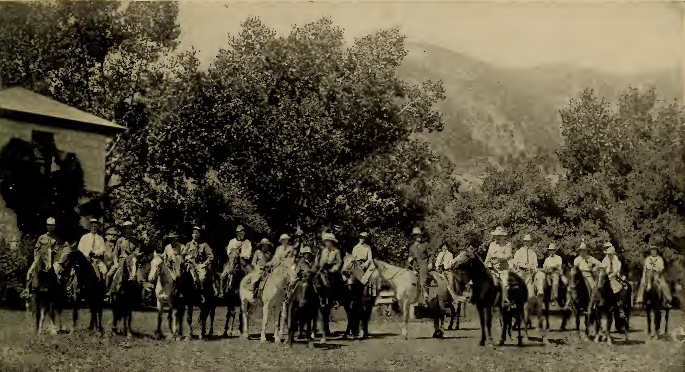
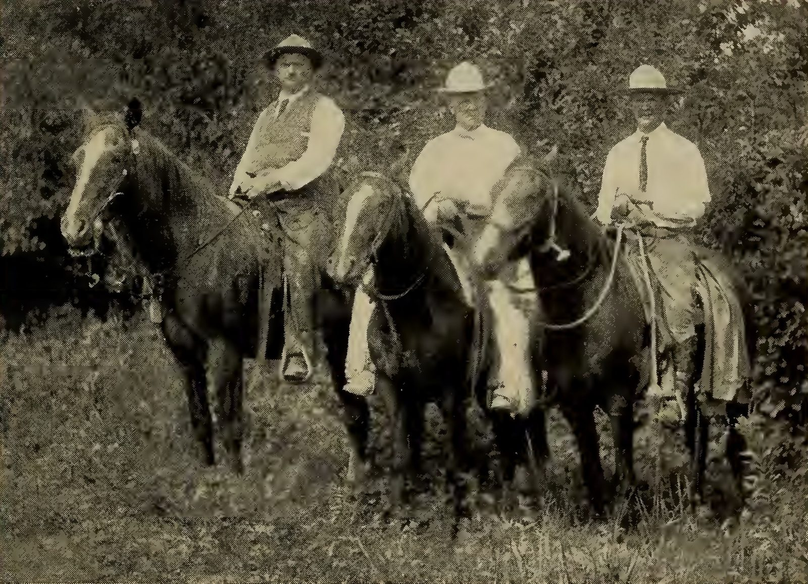
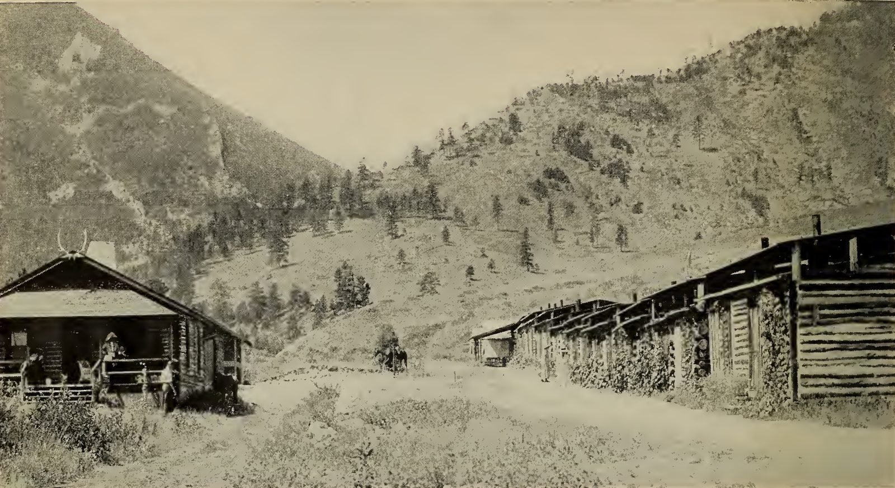

Nov 19, 2026
Three brothers started a cattle ranch in Dakota Territory in 1879, took paying guests in 1882, and moved the outfit to the Bighorn slope in 1904. Historians credit Eatons' Ranch as the first dude ranch in the country. The fourth and fifth generations still run the place.

WOLF, Wyo. — The Eaton family has been putting visitors on horses on the eastern slope of the Bighorn Mountains since 1904. The move that year brought a guest ranch from a spread near Medora, in Dakota Territory, to Wolf Creek, west of Sheridan.1 2
The work started earlier still. In 1879, three brothers — Howard, Willis, and Alden Eaton — took up a horse-and-cattle ranch near Medora.1 2 3 Friends from the East came to stay. In 1882, a guest insisted on paying for room and board.1 3 4
The Eaton brothers began taking paying visitors, and the next year Howard Eaton led guests on pack trips into Yellowstone National Park (leaves WyoVote).1 3 4 Historians now credit Eatons' Ranch (leaves WyoVote) as the first dude ranch in the country.1 4 5
The move to Wyoming gave the visitors more country to ride — mountain scenery, fishing, hunting, and a wide run of public land.1 The ranch sits about 18 miles west of Sheridan, on the eastern edge of Bighorn National Forest. The lands cover about 7,000 acres of open hills and creek bottom.4 6

Ownership has stayed in the Eaton family. The fourth and fifth generations now operate Eatons' Ranch as both a cattle ranch and a guest ranch.2 5 6 Guests still ride, fish, and take all-day trips into the national forest, and good riders may go out unescorted with permission from the ranch.5 6 More than 200 horses stand ready in the remuda, and cabins hold families as well as single riders.5 6
A 1915 booklet from the Eaton brothers called the ranch a real western outfit, open to visitors for a short period each year.7 Riding came first, and fishing close behind.7 Photographs in the 1915 booklet show packed strings ready for a mountain trip, riders in the yard, and a cabin row called "the Pike" under the Bighorn slope.7

The Eaton brothers went looking for better riding country and found Wolf Creek. Later generations kept the gate open, and the horses still know the way into the forest.
Credits
- WyoHistory.org — John Clayton, "Romancing the West: Dude Ranching in Wyoming," Nov. 8, 2014 (Howard, Alden, and Willis Eaton began ranching near Medora, Dakota Territory, in 1879; paying guests as early as 1882; Howard Eaton led pack trips to Yellowstone the following year; the Eatons moved the ranch to Wolf, Wyo., west of Sheridan, in 1904, for mountain scenery, fishing, hunting, and public land; the brothers are widely credited with running the first dude ranch). https://www.wyohistory.org/encyclopedia/romancing-west-dude-ranching-wyoming (leaves WyoVote)
- Eatons' Ranch — Ranch History (three brothers, Howard, Willis, and Alden Eaton, established a horse-and-cattle ranch near Medora, North Dakota, in 1879; a guest prevailed on the Eatons to charge for room and board; the family moved to the present location on Wolf Creek near Sheridan, Wyoming, in 1904; the ranch has always been in the Eaton family and is now operated by the fourth and fifth generations). https://eatonsranch.com/the-ranch/history/ (leaves WyoVote)
- Encyclopedia of the Great Plains — Lawrence R. Borne, "Dude Ranching" (Custer Trail Ranch founded in 1879 by Howard, Willis, and Alden Eaton at Medora, Dakota Territory; hosts to visitors in 1882; the following year Howard Eaton led guests on the first of many pack trips to Yellowstone Park; the Eaton brothers moved the operation in 1904 to the Bighorn Mountain area in Wyoming; Eatons' Ranch has operated there since that move). https://plainshumanities.unl.edu/encyclopedia/doc/egp.sr.015.html (leaves WyoVote)
- Buffalo Bill Center of the West — "Dude Ranching" (in 1882 a guest insisted on paying at the Custer Trail Ranch near Medora; Howard, Alden, and Willis Eaton bought the property in 1879 as a working cattle ranch; the Eatons later moved to Wolf, Wyoming, near Sheridan; the ranch is 18 miles west of Sheridan on the eastern slopes of the Bighorn Mountains and consists of 7,000 acres; Eatons' Ranch is generally considered the first true dude ranch and still operates as a dude and cattle ranch). https://centerofthewest.org/explore/buffalo-bill/research/dude-ranching/ (leaves WyoVote)
- Travel Wyoming — "Western Authenticity Transcends Time at Eatons' Ranch," updated Feb. 13, 2017 (fifth generation of ownership; first dude ranch in the country; eastern slopes of the Bighorn Mountains; more than 200 horses; fly fishing and rides into the Bighorn Mountains; cabins along Wolf Creek). https://travelwyoming.com/blog/stories/post/western-authenticity-transcends-time-at-eatons-ranch/ (leaves WyoVote)
- The Dude Ranchers' Association — Eatons' Ranch listing (founded in 1879; 18 miles west of Sheridan on the eastern slopes of the Bighorn Mountains; 7,000-acre dude and cattle ranch, operated by the Eaton family, adjoining Bighorn National Forest; more than 200 horses; trout and bass fishing; cabins for individuals and families; all-day rides into the Bighorn National Forest; unescorted riding with permission of the ranch). https://duderanch.org/find-a-ranch/eatons-ranch/ (leaves WyoVote)
- Eaton Brothers, Eatons' Ranch, Wolf, Wyoming, [Chicago: Poole Brothers, c1915], Library of Congress, LCCN 15013669 (the booklet calls Eatons' Ranch "a real western ranch, open to visitors for a short period each year"; riding is the principal pastime, with fishing close behind; a photograph is captioned "Ready for a Mountain Trip"; a cabin row is captioned "The Pike," with mountains in the background; the title page shows three riders; the collection record states that the books in the collection are in the public domain). https://www.loc.gov/item/15013669/ (leaves WyoVote)